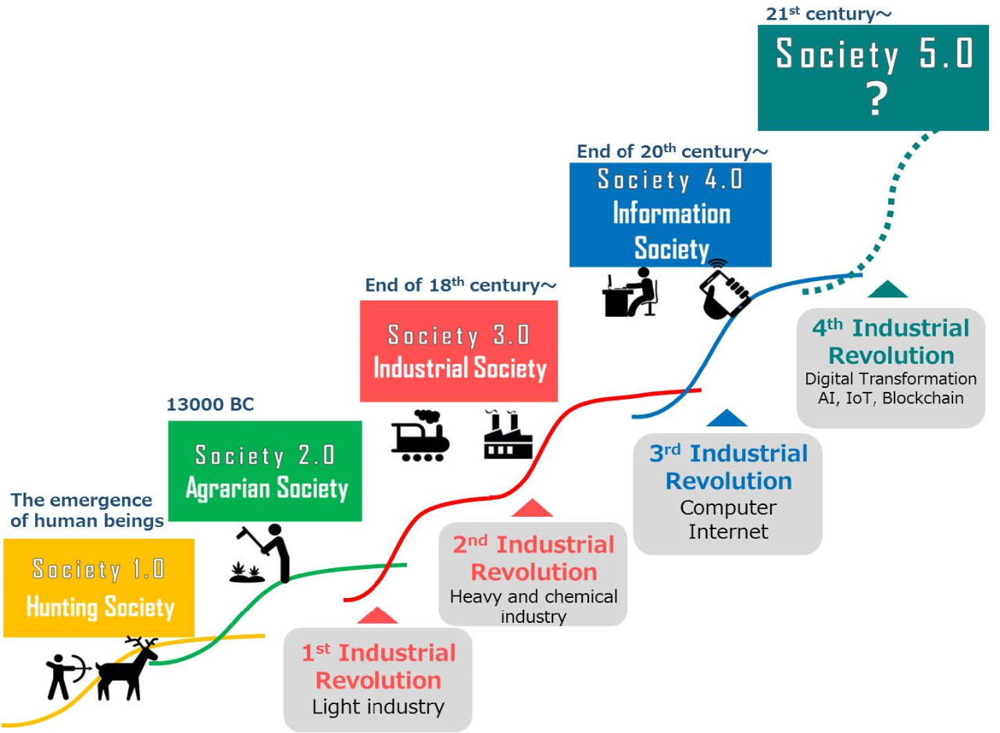

Mijn Opleiding
Ik studeer HBO-ICT aan de Hogeschool van Arnhem en Nijmegen, hierbij volg ik het profiel Infrastructure, Security & Management. Tijdens mijn studie heb ik veel kennis opgedaan op het gebied van IT infrastructuur, de veiligheid hiervan (Security), maar ben ik ook gespecialiseerd in het management van ICT binnen organisaties.
Kruispunten
Een interessant kruispunt tussen ICT en Smart Industry vind ik Internet of Things en de onzichtbare risico's die particulieren consumenten in de toekomst zullen lopen.
Daarom heb ik een klein rapport geschreven over de risico's van Internet of Things. Deze is hieronder te lezen:
Internet of Things
Dit rapport behandelt de risico's van Internet of Things voor consumenten. In dit rapport worden fictieve scenario's geschetst ter verduidelijking van de concepten.
Klik hier om het rapport te openen.

Wat betekent "Smart" over 10 jaar?
Society 5.0
Het is moeilijk om precies te zeggen hoe smart industry er over 10 jaar uitziet. Technologie ontwikkelt zich exponentieel en technologische doorbraken vinden steeds vaker plaats. J.H. Ortiz zegt dat de toekomst van smart industry gefocust is op de rol van de samenleving, en benoemt “Society 5.0”. In Society 5.0 worden aangeboden producten en diensten aangepast aan de wensen en behoeftes van de klant. Het doel is om een fusie te bereiken tussen technologische ontwikkelingen en de mens. Hiermee vullen de mensen en machines elkaar aan. Hierdoor vermijdt men de situatie waarin mensen door machines worden vervangen. De toekomst van Smart Industry gaat volgens J.H. Ortiz dus voorbij aan productieprocessen, maar ziet een nieuwe samenleving voor zich.
Bron: Keidanren Society 5.0 Co-Creating the Future 2018
Bronnen
-
Ortiz, J. H., Marroquin, W. G., & Cifuentes, L. Z. (2020, 25 maart). Industry 4.0: Current Status and Future Trends | IntechOpen. intechopen.
https://www.intechopen.com/books/industry-4-0-current-status-and-future-trends/industry-4-0-current-status-and-future-trends -
Unknown (2018). Society 5.0: Co-creating the future | Keidanren.
https://www.keidanren.or.jp/en/policy/2018/095_outline.pdf
Strategie
- Welke repositories / welke zoekstrategieën heb je gebruikt?
- Ik heb deskresearch gedaan. Geprobeerd zoveel mogelijk bronnen over dit onderwerp te vinden om vervolgens een selectie te maken.
- Hoe heb je de bruikbaarheid van het materiaal bepaald?
- Ik heb vooral gekeken naar relevantie en naar gerespecteerde auteurs. Ik heb gezocht naar werk dat na 2018 is gepubliceerd.
- Op welke wijze heb je de uiteindelijke selectie gemaakt?
- Ik heb na bovenstaande selecties gekozen voor artikelen die een idee schetsten dat ik makkelijk in een verhaal over kon brengen.
- Met wie heb je de resultaten besproken?
-
Levi van Hoogstraten met het volgende commentaar:
We zijn het grotendeels eens over de toekomst van Smart Industry. Alleen denk ik dat over een aantal jaren de machines de mensen gaan overnemen. In deze uitwerking wordt vooral beschreven dat machines en mens elkaar aanvullen. Voor de rest geen opmerkingen.
Reflectie
Ik ben tevreden met de uitwerking van deze opdracht, maar voor een betere uitwerking en meer objectiviteit zal ik meer bronnen moeten gebruiken. Ook is het mogelijk om meerdere mensen van te voren te laten reviewen en daarnaast kan ik aangeven hoe ik de feedback heb verwerkt. Verder kan ook het selectieproces van de bronnen verbeterd wordendoor te verduidelijken op welke manier ik heb gezocht en welke zoekmachines en zoektermen ik heb gebruikt. Ik ben tot deze inzichten gekomen mede dankzij de feedback van mijn mede-smarties.
De opdracht
Het doel van deze opdracht is onderzoek doen naar het begrip co-design.
- Op welk soort vraagstukken is het toepasbaar?
- Welke positie heeft het t.o.v. bijvoorbeeld design en system thinking, co-creatie?
- Wat is Smart co-design?
De uitwerking van deze opdracht is hieronder te beluisteren:
Reflectie
Persoonlijk ben ik niet tevereden met deze uitwerking. Het voelt als een afgeraffeld geheel.
Om deze opdracht de volgende keer goed uit te voeren moet ik de volgende dingen doen:
- Van-te-voren de podcast indelen en een format bepalen;
- Aandacht besteden aan de uitleg van het begrip met behulp van wetenschappelijke artikelen;
- Transparantie bieden over de inhoud en andere informatie met betrekking tot de gebruikte bronnen;
- Transparantie bieden over de gebruikte selectiemethodes voor de bronnen;
- Tijdens de podcast bepaalde geselecteerde bronnen bij het verhaal betrekken voor meer diepgang.
Ik ben mede dankzij de feedback van mijn mede-smarties tot deze inzichten gekomen.
Casus Lean & Agile
Voor deze opdracht zal ik via een casus illustreren wat Smart Industry betekent in termen van Lean en Agile. Ik heb in 2020 geholpen bij een project voor een software bedrijf. Dit project had betrekking op de interne communicatie van de afdeling systeembeheer. Via mijn ervaringen tijdens dit project wil ik aantonen wat ik heb geleerd op het gebied van Lean en Agile.
Het probleem
Er is een gebrek aan interne communicatie op de afdeling systeembeheer. Het team “Systeembeheer” bestaat uit 5 werknemers. Iedere werknemer is gespecialiseerd en deskundig in hun vakgebied. Iedere dag draait een werknemer een support dienst, hierbij verleent de werknemer support aan de interne organisatie via e-mail of telefoon, om vragen te beantwoorden of problemen op te lossen. Deze diensten worden iedere dag door gewisseld. Verder werken de medewerkers ieder aan hun eigen projecten of taken. De technische en organisatorische kennis zit bij de teamleden ieder in het eigen hoofd. Documentatie is nauwelijks aanwezig of is verouderd, indien iemand ergens niet uitkomt moet deze persoon navraag doen bij de persoon met de juiste kennis. Daarnaast is de interne communicatie niet heel sterk in het team, wanneer irritaties of belemmeringen ontstaan worden deze vaak niet gedeeld met elkaar. De teamleden werken soms langs elkaar heen of zijn bezig met dezelfde taken, maar komen hier vaak achteraf pas achter.
De oplossing
Contentmanagement
Het gebrek aan kennisdeling is op te lossen door gebruik te maken van een contentmanagement platform, in dit geval Confluence. Confluence is een Software As A Service oplossing waarbij het delen van content centraal staat, via Confluence is het mogelijk om pagina’s aan te maken. Deze worden vervolgens automatisch gedeeld met de teamleden. Op deze manier ontstaat een wiki achtige opzet met een dienstenpagina waarop alle diensten van systeembeheer staan. Per dienst bestaan vervolgens weer sub pagina’s met verdere informatie. Hiernaast bestaan ook werkpagina’s met bijvoorbeeld tabellen om de inventaris te beheren. Via Confluence kan nu ook tegelijk worden samengewerkt. Het invoeren van Confluence zorgt voor gestroomlijnde kennisdeling onder de collega’s. Informatie kan snel worden opgezocht en afspraken staan gedocumenteerd, dit heeft de werk efficiëntie verhoogd. Veel processen op de systeembeheerafdeling hebben hier profijt van en de doorlooptijd voor het betantwoorden van vraagstukken is flink verkort.
Agile
Voor het verbeteren van de interne communicatie is gekeken naar bepaalde elementen van Agile methodes, in dit geval SCRUM, die van toepassing zijn op de situatie. Er is bijvoorbeeld een daily stand-up ingevoerd. Dit houdt in dat iedere medewerker vertelt waar hij/zij mee bezig is, wat zijn/haar planning voor de dag is en of hij/zij nog ergens tegen aan gaat lopen en daarbij hulp nodig heeft. Hiernaast wordt gebruik gemaakt van een digitaal scrumbord via Microsoft Teams om taken te visualiseren en aan personen te koppelen, zo is inzichtelijk wie waar mee bezig is. Tot slot was er behoefte aan een maandelijkse retrospective, nu is iedere laatste vrijdag van de maand een feedback moment met de gehele afdeling om te peilen wat er verbeterd kan worden ten opzichte van de afgelopen maand. Door het gebruik van een aantal elementen uit Scrum en deze eigen te maken is de communicatie en transparantie in het team verbeterd.
Relatie met Smart Industry
De relaties in deze casus met Smart Industry zijn de volgende:
Door gebruik te maken van een SAAS oplossing kan kennis worden gedeeld. Omdat deze oplossing in de cloud draait kan iedere medewerker, waar dan ook, deze informatie bereiken. Het content management platform biedt een oplossing om tegelijk pagina’s te bewerken en kennis te delen om zo de bedrijfsprocessen van de systeembeheerafdeling te stroomlijnen.
Moderne ICT middelen worden dus ingezet om bedrijfsprocessen te verbeteren en optimaliseren. Voor de interne communicatie zoals taken, planningen en borden wordt gebruik gemaakt van Microsoft Teams. Dit is een modern communicatiemiddel van Microsoft draait ook in de cloud. Tot slot is de doorlooptijd verkort en dit zorgt voor tijdwinst die weer elders nuttiger kan worden besteed.
Bronnen
Omdat deze casus is geschreven op basis van mijn eigen ervaringen zijn er geen externe bronnen beschikbaar.
Er zijn wel interne bronnen die procesverbeteringen aantonen, maar deze kan in niet delen vanwege mijn geheimhoudingsplicht.
Reflectie
Ik ben zeer tevreden met mijn uitwerking van deze opdracht. De uitwerking voldoet niet aan alle eisen, maar deze uitwerking voldoet wel aan het doel van de opdracht. Het toelichten van mijn eigen ervaringen zorgt ervoor dat iemand makkelijk een beeld bij deze casus kan schetsen. Op deze manier krijgt de lezer dus ook een beter beeld bij de relatie van Lean en Agile met Smart Industry.
Weekopdracht Smart Factories
Inleiding
Dit document beschrijft de opzet voor de gemaakte podcast waarin het onderwerp Platform Business Model wordt besproken. Tijdens de podcast wordt er gediscussieerd met behulp van stellingen.
Inhoud
De inhoudelijke informatie in deze podcast komt vooral van onze eigen ervaringen met het onderwerp. We zijn allebei bekent met het onderwerp en kennen de verschillende aspecten. Hierdoor zijn er geen externe bronnen benoemd, geciteerd of behandeld.
Podcast structuur
De podcast is als volgt ingedeeld:
- Inleiding (verwelkoming en doel en duidelijkheden);
- Vaststelling van het onderwerp en de stellingen;
- Bespreking van situaties met behulp van meningen, argumenten en discussies;
- Afronding (samenvatting, verdere verloop, afspraken over bekendmaking resultaten).
We kiezen tijdens deze podcast uit drie typen standpunten:
-
Beschrijvende standpunten: Je beschrijft als schrijver een feit, je uitspraken kunnen juist of onjuist zijn.
Voorbeeld: De stijging van de zeespiegel wordt veroorzaakt door de opwarming van de aarde. -
Waarderende standpunten: Je beoordeelt als schrijver iets op een bepaalde manier, je geeft een waardeoordeel.
Voorbeeld: Democratie is de beste staatsvorm. -
Aansporende standpunten: Je geeft als schrijver aan dat er maatregelen genomen moeten worden, je geeft een advies.
Voorbeeld: Obesitas kan het beste voorkomen worden door goede voorlichting.
Stellingen
Voor deze podcast hebben we de volgende stellingen opgesteld. Deze zijn ingedeeld op basis van het soort standpunt.
Beschrijvende standpunten
- Sociale Media leiden af als je huiswerk maakt of andere belangrijke dingen doet.
- Sociale Media gebruiken voor het slapen heeft invloed op je slaappatroon.
- Sociale Media mag niet meer ingezet worden om nieuws te verspreiden, enkel om persoonlijke informatie te delen.
Waarderende standpunten
- Google verzamelt persoonlijke gegevens en maakt daarmee profielen van gebruikers, door Google Chrome te gebruiken stem je als gebruiker hiermee in.
Aansporende standpunten
- Het verzamelen en verwerken van data door platforms zoals google en facebook moet gestopt worden om te voorkomen dat dit soort platforms gaan bepalen welke informatie de eindgebruiker te zien krijgt.
Format
Wij zullen beide reageren op de stelling, maar we houden ons niet vast aan tijdslimieten en wie bijvoorbeeld de beurt heeft. Het is een vloeiend gesprek, omdat we het podcast idee willen nabootsen.
De podcast
Speel de onderstaande video af om naar onze podcast te luisteren:
Bronnen
-
Kulche, P. (2020, 14 september). Google en privacy. Consumentenbond.
https://www.consumentenbond.nl/internet-privacy/google-en-privacy#:~:text=Google%20verzamelt%20vooral%20priv%C3%A9gegevens%20als,een%20zoekopdracht%20uitvoert%20via%20Google.
Reflectie
Bij een volgende opname zal het betrekken van wetenschappelijke artikelen meer diepgang brengen in de podcast. Dit inzicht heb ik gekregen dankzij de gegeven feedback van een mede-smartie. Na het ontvangen van de feedback heb ik ook de kopjes "Inhoud" en "Bronnen" toegevoegd ter verduidelijking van de bronnen.